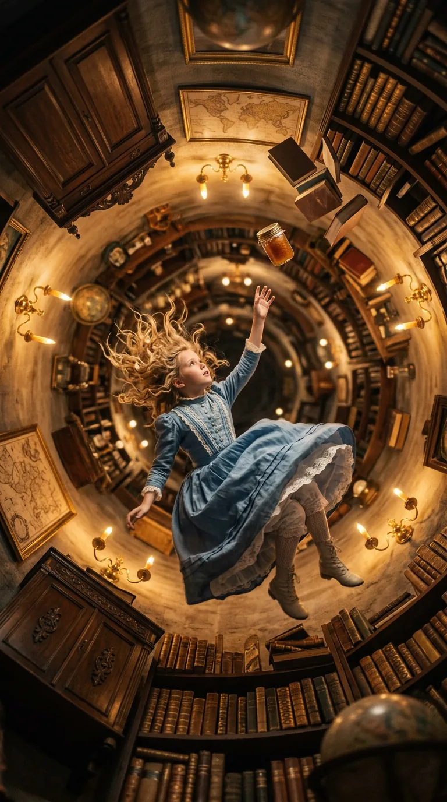
Curiosity Plunges Into the Unknown
Alice was, it must be said, thoroughly and completely bored—the sort of boredom that settles upon a child on a hot afternoon like a particularly oppressive blanket. There she sat beside her sister on the riverbank, with nothing whatsoever to do, for the book her sister was reading contained neither pictures nor conversations, and what, Alice quite reasonably wondered, was the use of *that*? She was contemplating, in that drowsy half-hearted way one does when the summer heat makes thinking feel like wading through treacle, whether a daisy-chain might be worth the tremendous effort of standing up, when a White Rabbit with pink eyes came scurrying past.
Now, a talking rabbit—for it was muttering rather anxiously about being late—did not strike Alice as particularly remarkable, though she would reflect afterwards that perhaps it ought to have done. But when the creature produced a watch from its waistcoat-pocket (for it wore a waistcoat, you see, which is not at all the usual thing for rabbits), Alice's curiosity blazed up like a struck match, and she was on her feet and running before she had time to consider anything so dull as consequences. Down the rabbit-hole she tumbled after it, never once pausing to wonder how she might get out again.
Down, down, down she fell—so slowly, or perhaps so deeply, that she had ample time to observe the curious furnishings of the well: cupboards and bookshelves lining the walls, maps and pictures hung upon pegs. She plucked an empty marmalade jar from a shelf as she passed and, being a considerate child who did not wish to brain anyone below, tucked it neatly into a cupboard further down. Her mind wandered pleasantly through calculations of miles fallen and half-remembered geography lessons—she was rather proud of knowing the earth's centre was four thousand miles down, even if she hadn't the faintest notion what Latitude or Longitude actually meant, except that they were wonderfully grand words. She amused herself imagining she might fall straight through to the Antipathies (she was privately relieved no one was listening to that particular muddle), and whether one ought to curtsey while plummeting through the air, and whether her cat Dinah would miss her, and whether cats ate bats or bats ate cats—until, growing quite drowsy with all this tumbling and wondering, she drifted into dreams, and *thump!* landed upon a heap of sticks and leaves.
Unhurt and undaunted, Alice sprang up to find herself in a long, low hall lit by hanging lamps, with doors all round—every one of them locked. A glass table held a tiny golden key, which fit none of the doors until she discovered, behind a low curtain, a door scarcely fifteen inches high. Through it she glimpsed the loveliest garden imaginable, bright with flowers and cool fountains. But alas, she could not possibly squeeze through.
Here began Alice's troubles with size. A bottle labelled "DRINK ME" appeared upon the table—and being a sensible child who had read cautionary tales about red-hot pokers and bottles marked poison, she checked first before drinking. Finding it delicious (a curious jumble of cherry-tart, custard, pineapple, roast turkey, toffee, and hot buttered toast), she drank it all and shrank to ten inches high. Delightful—except she had left the key upon the table, now impossibly out of reach. Poor Alice sat down and cried, then scolded herself sharply for crying, for she was very fond of giving herself advice she seldom followed.
A glass box beneath the table offered hope: a small cake marked "EAT ME" in currants. Alice reasoned that growing larger would let her reach the key, while growing smaller would let her creep under the door—either way, the garden would be hers. She ate the cake and waited, hand pressed to her head, to see which way the world would shift next.
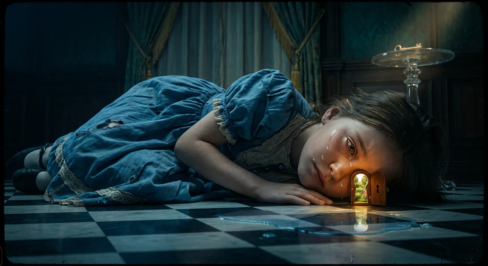
Growing and Shrinking Through Salty Tears
"Curiouser and curiouser!" cried Alice—and indeed, things were becoming precisely that, for she found herself shooting upward like the most extraordinary telescope imaginable, her poor feet receding to such alarming distances that she began to wonder who on earth would be responsible for putting on their shoes and stockings now. She resolved, in her characteristically practical way, to send them boots by carrier every Christmas, even going so far as to imagine the address: *Alice's Right Foot, Esq., Hearthrug, near the Fender*—though she did acknowledge, upon reflection, that this was perhaps the most tremendous nonsense she had ever spoken.
Her growth proved decidedly inconvenient, for when she had stretched to more than nine feet tall and seized the little golden key at last, the garden door—that tantalizing portal to the lovely garden—became more hopelessly out of reach than ever. Poor Alice could do nothing but lie upon her side and peer through with a single wistful eye, whereupon she sat down and commenced crying with such enthusiasm that her tears collected into a respectable pool some four inches deep.
The White Rabbit's return offered a glimmer of hope. He came trotting past in splendid attire, clutching white kid gloves and a fan while muttering anxiously about keeping the Duchess waiting. But when Alice ventured to address him—quite timidly, for she was feeling rather desperate—the creature startled violently, dropped his belongings, and skurried away into the darkness. Left with the abandoned fan and gloves, Alice fell into philosophical contemplation of her predicament. Had she been changed in the night? Was she still Alice, or had she perhaps become Mabel, or Ada, or someone else entirely? She attempted to verify her identity through multiplication tables and geography, but four times five came out twelve, London had somehow become the capital of Paris, and when she tried to recite "*How doth the little*—" the familiar verses transformed into something altogether peculiar about a crocodile with gently smiling jaws.
It was all most distressing, and Alice began to fear she had indeed become Mabel and would be forced to live in a poky little house with hardly any toys. Yet while she fretted and fanned herself, she noticed—with considerable alarm—that her hands had grown small enough to fit into the Rabbit's gloves. The fan was shrinking her away! She dropped it just in time to avoid disappearing altogether, then rushed toward the garden door only to discover herself locked out once more, the golden key gleaming uselessly upon the glass table high above.
Her foot slipped, and *splash*—she found herself swimming in the very pool of tears she had wept when nine feet tall. The water tasted distinctly salty, and Alice thought it rather fitting punishment for crying so excessively, though she couldn't help observing that everything today was queer.
A Mouse soon joined her in the pool, and Alice—recalling her brother's Latin Grammar—addressed it with a ceremonious "O Mouse!" When it seemed not to understand, she tried French, asking after her cat, which produced such violent distress in the creature that she was obliged to apologize profusely. Yet Alice, in her well-meaning way, could not resist describing dear Dinah's excellence at catching mice, nor the farmer's terrier so useful for killing rats—each digression sending the poor Mouse into fresh paroxysms of offense.
At last, the Mouse agreed to tell Alice its history once they reached shore, and it was indeed high time to go, for the pool had grown remarkably crowded with curious creatures—a Duck, a Dodo, a Lory, an Eaglet, and several others—all making their way toward dry land and whatever strange adventures awaited them there.
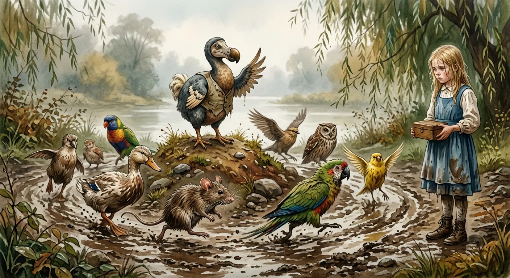
Everybody Wins and All Get Prizes
What a bedraggled assembly it was that gathered upon the bank—birds with feathers drooping in sorry tangles, animals with fur plastered flat against their shivering bodies, and every creature among them dripping wet, thoroughly cross, and altogether uncomfortable. The question of how to get dry again naturally presented itself as the most pressing matter at hand, and after a brief consultation, Alice found herself chattering away with these peculiar strangers as though they had been lifelong acquaintances. She fell into quite a spirited dispute with the Lory, who grew sulky and retreated into that familiar refuge of those losing arguments: "I am older than you, and must know better." Alice, being a sensible child, refused to accept this without proof of the Lory's age, and as the Lory would not divulge it, the matter reached an impasse.
The Mouse, who carried itself with an air of authority, commanded everyone to sit and listen, promising to make them dry enough. With great ceremony, it launched into the driest thing it knew—a passage of English history concerning William the Conqueror, earls and archbishops, conquest and submission. The recitation proved dry in entirely the wrong sense, for when Alice reported herself still as wet as ever, the Dodo rose solemnly to propose "more energetic remedies." The Eaglet demanded plain English, and the Dodo obliged by suggesting a Caucus-race.
Now, a Caucus-race, as the Dodo explained by demonstration, required neither a proper course nor a proper start nor a proper finish. Everyone simply ran about in a rough circle, beginning and stopping as they pleased, until the Dodo declared it over. When the inevitable question arose—"But who has won?"—the Dodo sat thinking in the posture one usually sees Shakespeare assume in portraits, finger pressed thoughtfully to forehead, before pronouncing that *everybody* had won and all must have prizes.
This created a fresh difficulty, for someone had to furnish the prizes, and that someone, the Dodo declared, must be Alice. In desperation she produced a box of comfits from her pocket—mercifully preserved from the salt water—and distributed them all around, one apiece. But Alice herself required a prize, the Mouse insisted, and so she surrendered her only remaining possession: a thimble, which the Dodo presented back to her with tremendous ceremony. Alice thought the whole affair perfectly absurd, but the creatures looked so grave she dared not laugh.
Once the comfits were eaten—amid complaints from large birds who could not taste their tiny portions and small birds who choked and required patting—Alice reminded the Mouse of its promised history and why it hated cats and dogs. The Mouse sighed that its tale was long and sad, and Alice, glancing at the creature's tail, agreed it was certainly long, though she could not fathom why it should be sad. Her confusion deepened as the Mouse spoke, for she imagined the tale curving and tapering like the tail itself, winding through threats and trials and a villainous dog named Fury who served as judge, jury, and executioner.
"You are not attending!" the Mouse snapped, and poor Alice, trying to make amends, only made matters worse by mishearing "fifth bend" as "knot." The offended Mouse stormed off despite all entreaties to return, leaving behind a chorus of sighs and, from a snappish young Crab, a sharp rebuke to its moralizing mother.
In the awkward silence, Alice thought aloud of her cat Dinah—what a capital mouser she was, what a hunter of birds! The effect was immediate and catastrophic. The birds scattered on various flimsy pretexts, until Alice found herself quite alone, regretting bitterly that she had ever mentioned Dinah. Lonely and low-spirited, she began to cry once more, wondering if she would ever see her dear cat again.
But in a little while, a faint pattering of footsteps reached her ears, and she looked up eagerly, hoping the Mouse had relented—or perhaps that someone new entirely was approaching through that strange and curious world.
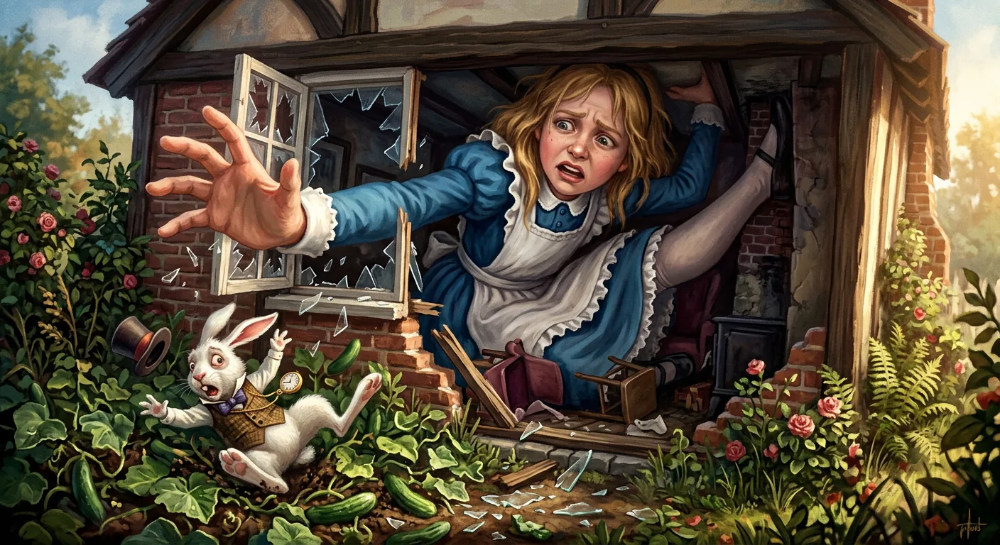
Too Large for the Rabbit's House
It was the White Rabbit once more, trotting along in that anxious, fretful manner of his, muttering about the Duchess and executions and his precious fur and whiskers—all in a terrible state, you see, over a missing fan and pair of gloves. Alice, being a good-natured sort of child (though perhaps a rather curious one), set about hunting for these lost articles, only to discover that everything had changed since her swim in the pool of tears: the great hall, the glass table, the tantalizing little door—all vanished completely.
But the Rabbit, upon noticing Alice, mistook her at once for his housemaid Mary Ann and sent her scurrying off to fetch his things from home. And Alice—though she knew perfectly well she was *not* Mary Ann—found herself running obediently toward a neat little house with "W. RABBIT" engraved upon a bright brass plate, wondering all the while how queer it was to be running errands for a rabbit. She supposed Dinah the cat might start ordering her about next, though she rather doubted the household would tolerate such behavior from a cat.
Inside the Rabbit's tidy room, Alice discovered the fan and gloves easily enough, but her eye fell upon a little bottle near the looking-glass—no "DRINK ME" label this time, but Alice had learned by now that eating or drinking *anything* in this place produced interesting results. She hoped it might make her grow large again, for she was quite tired of being such a tiny little thing.
It did so indeed—and rather too well. Before she had drunk half the bottle, her head pressed against the ceiling, and down, down she went onto her knees, then flat upon the floor, one arm thrust out the window, one foot wedged up the chimney, until the magic finally stopped and she could grow no larger. There she lay, wedged miserably in that little room, thinking how much pleasanter things had been at home when one wasn't constantly growing and shrinking and being ordered about by mice and rabbits.
What followed was a comedy of increasingly desperate measures. The Rabbit returned, demanding his gloves, and when he could not force the door open—Alice's elbow being pressed firmly against it—he announced he would try the window instead. Alice's enormous hand snatching at him sent him tumbling into what she supposed must be cucumber-frames, judging by the crash of glass. Then came Pat, digging for apples (of all things), and finally poor Bill the Lizard, sent down the chimney by general consensus, for everyone seemed to put *everything* upon Bill. Alice gave one sharp kick, and up Bill went like a sky-rocket, to the astonishment of all assembled.
When the creatures threatened to burn the house down, Alice shouted that she would set Dinah upon them—which produced dead silence. Then came a shower of pebbles through the window, only the pebbles turned to little cakes upon the floor, and Alice, reasoning that eating one *must* make her smaller since it could hardly make her any larger, swallowed one directly. She shrank at once, fled through the door past the crowd of little animals tending to poor Bill with brandy, and escaped into a thick wood.
There she formed an excellent plan—grow to her right size, then find her way into that lovely garden—with only the small difficulty of having not the faintest idea how to accomplish either thing. A great puppy bounded into view, enormous and playful and terrifying, and Alice spent several breathless minutes dodging its massive paws behind a thistle until the creature tired itself out.
Leaning against a buttercup to rest—for she was quite the wrong size for such adventures—Alice pondered the great question of what she ought to eat or drink next, when her gaze fell upon a large mushroom nearby, and upon its top sat a large blue caterpillar, smoking a hookah in perfect stillness, taking not the smallest notice of her or of anything else.
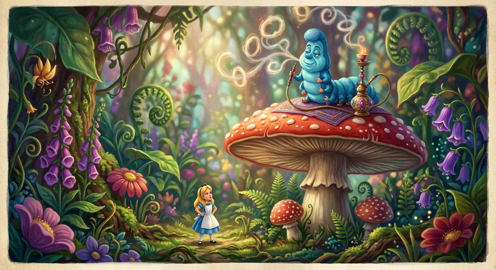
Questions of Size and Self
Upon a mushroom sat a Caterpillar, languidly smoking a hookah, and for some considerable time it and Alice simply regarded one another in silence—the sort of silence that feels rather *pointed*, if you know what that means, and Alice was beginning to suspect she did not. At last the creature deigned to remove the hookah from its mouth and addressed her with a question that was, by any measure, not an encouraging opening for a conversation: "Who are *you?*"
Now, this ought to have been the simplest question in the world, and yet poor Alice found herself quite unable to answer it properly. She hardly knew who she *was* just at present, for she had been so many different sizes since morning that her very identity seemed to have got muddled somewhere along the way. The Caterpillar, for its part, proved singularly unhelpful—contradicting everything Alice said in the most *vexing* short remarks, insisting it saw nothing confusing about changing sizes (though Alice rather thought it might feel differently when it became a chrysalis and then a butterfly, as caterpillars do), and repeatedly circling back to that impossible question of who she was, until Alice grew quite irritated and demanded to know who *it* was instead. "Why?" said the Caterpillar, and Alice could think of no good reason at all.
When Alice turned to leave, the Caterpillar called her back with promises of something important—which turned out to be nothing more than "Keep your temper," though eventually it did ask her to recite "You are old, Father William." Alice folded her hands and began, but the poem came out *all wrong*, transforming into a delightfully absurd exchange between a young man and his eccentric father, who stood on his head, turned back-somersaults, devoured geese bones and all, and balanced eels on his nose—all thanks to having no brain, special ointment, a legally-strengthened jaw, and sheer irritability. The Caterpillar declared it wrong from beginning to end, which Alice could not entirely dispute.
After more maddening contradiction about sizes—the Caterpillar taking great offense when Alice called three inches a wretched height, being precisely three inches tall itself—the creature finally offered something useful: one side of the mushroom would make her taller, and the other shorter. Then it crawled away, leaving Alice to puzzle out which side was which on a perfectly *round* mushroom.
She broke off pieces from opposite edges and nibbled the right-hand bit, whereupon her chin struck her foot with alarming violence as she shrank. Hastily eating the left-hand bit, she found her head suddenly free—but attached to an impossibly long neck rising like a stalk above the treetops, where a Pigeon attacked her, shrieking "Serpent!" No amount of protestation could convince the hysterical bird otherwise, particularly when Alice, that truthful child, admitted she *had* eaten eggs—making her, by the Pigeon's logic, a kind of serpent regardless.
After much careful nibbling at both mushroom pieces, Alice at last restored herself to her proper height, feeling quite strange after so long at wrong sizes. Half her plan was accomplished; now she must reach that beautiful garden. Coming upon a little house about four feet high, she prudently nibbled herself down to nine inches before approaching, for it would never do to frighten whoever lived there out of their wits.
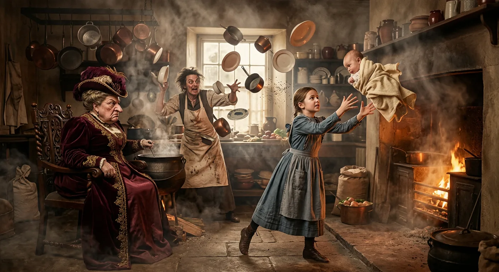
Chaos, Cheshire Grins, and Flying Crockery
For a minute or two Alice stood contemplating the house before her, wondering what on earth to do next, when suddenly a footman in livery came running out of the wood—and she considered him to be a footman because he was in livery, for otherwise, judging by his face only, she would have called him a fish. He rapped loudly at the door, which was opened by another footman, this one with a round face and large eyes like a frog, and both footmen, Alice noticed, had powdered hair that curled all over their heads in the most ridiculous fashion. The Fish-Footman produced a great letter, nearly as large as himself, announcing an invitation from the Queen for the Duchess to play croquet, and when they both bowed low their curls got entangled together—which made Alice laugh so violently she had to run back into the wood for fear of being heard.
When Alice approached the door herself, the Frog-Footman proved spectacularly unhelpful, explaining with maddening logic that there was no use in knocking when they were both on the same side of the door, and besides, the noise within was far too tremendous for anyone to hear. And certainly there *was* a most extraordinary racket—howling and sneezing and the crash of breaking dishes—but the Footman merely announced he would sit there till tomorrow, or perhaps the next day, even as a large plate came skimming out and grazed his nose. Alice, quite desperate, finally declared him perfectly idiotic and let herself in.
The door led into a kitchen full of smoke and pepper, where the Duchess sat nursing a baby while a cook stirred a cauldron of soup and threw everything within reach at them both—fire-irons, saucepans, plates, and dishes. The Duchess took no notice even when they hit her, and when Alice cried out in terror for the baby's precious nose, the Duchess merely growled that if everybody minded their own business, the world would go round a deal faster. Alice attempted to show off her knowledge about the earth's rotation, but the Duchess, mishearing "axis" as "axes," called for Alice's head to be chopped off—though fortunately the cook was too busy with her soup to oblige.
The Duchess then sang a dreadful lullaby about beating her boy when he sneezes, tossing the poor creature violently up and down, before flinging the baby at Alice and hurrying off to play croquet with the Queen. Alice caught the queer-shaped little thing—it held out its arms and legs like a starfish and snorted like a steam-engine—and carried it outside, thinking it would surely be murdered if she left it behind. But as she walked, the baby's nose grew more and more like a snout, and its eyes grew extremely small, until there could be no mistake: it was neither more nor less than a pig. Alice set it down, feeling quite relieved to watch it trot away into the wood, and reflected that while it would have made a dreadfully ugly child, it made rather a handsome pig.
She was just thinking over which other children she knew who might do very well as pigs when she noticed the Cheshire Cat sitting on a bough overhead, grinning from ear to ear. The Cat informed her that in one direction lived a Hatter, and in the other a March Hare, and that it didn't matter which she visited—they were both mad. "We're all mad here," the Cat declared. "I'm mad. You're mad." When Alice protested, the Cat explained its own madness through impeccable nonsense logic: a dog growls when angry and wags its tail when pleased, but *I* growl when pleased and wag my tail when angry—therefore I'm mad.
The Cat vanished and reappeared several times, asking after the baby (which Alice reported had turned into a pig, just as matter-of-factly as if such things happened every day), until finally it disappeared quite slowly, beginning with the tail and ending with the grin, which remained hanging in the air some time after the rest had gone. "A grin without a cat!" Alice marveled. "It's the most curious thing I ever saw in my life!"
Following the Cat's direction, she soon came in sight of a house with chimneys shaped like ears and a roof thatched with fur, and nibbling a bit more mushroom to adjust her height, she approached rather timidly, half-wishing she had gone to see the Hatter instead—for suppose the March Hare should prove raving mad after all.
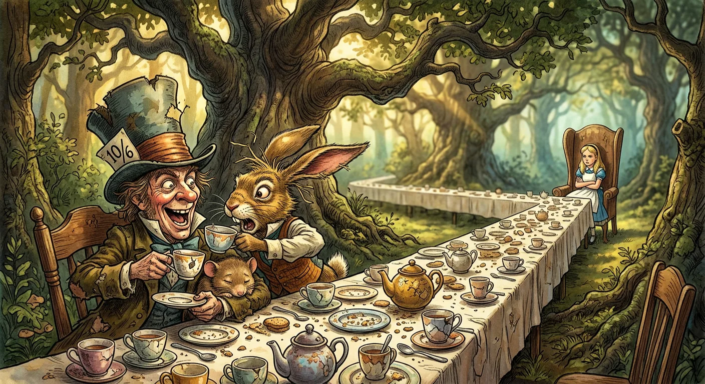
Riddles, Rudeness, and Endless Tea
There was a table set out beneath a tree—a large table, mind you, quite capable of accommodating a respectable company—and yet the March Hare and the Hatter had crammed themselves together at one corner of it, with a Dormouse wedged between them, fast asleep and serving (rather inconsiderately, Alice thought) as a sort of living cushion upon which they rested their elbows. "No room! No room!" they cried out when Alice approached, though there was *plenty* of room, as Alice pointed out with some indignation before settling herself into an arm-chair at the table's end.
What followed was, without question, the most bewildering tea-party Alice had ever attended—and she had attended several in her young life. The March Hare offered wine where there was none; the Hatter remarked upon Alice's hair wanting cutting (which was, Alice informed him with proper severity, very rude indeed); and no sooner had Alice been thoroughly affronted than the Hatter posed his famous riddle: "Why is a raven like a writing-desk?" Alice thought this rather promising, for she did enjoy riddles, but her enthusiasm dimmed considerably when, after much pondering, the Hatter confessed he hadn't the slightest idea of the answer himself. Nor had the March Hare. The riddle, it seemed, was merely nonsense—though the party proved quite prepared to lecture Alice on the difference between saying what one means and meaning what one says, with the Dormouse contributing drowsily that breathing when one sleeps is not at all the same as sleeping when one breathes.
The Hatter's watch—a curious timepiece that told the day of the month but not the hour—proved two days wrong, a circumstance blamed upon butter in the works (the *best* butter, the March Hare insisted meekly, though that hardly seemed to help). And here Alice learned the melancholy truth: the Hatter had quarrelled with Time himself, ever since a concert for the Queen of Hearts where he had sung "Twinkle, twinkle, little bat!" and been accused of murdering the time. Now it was always six o'clock, always tea-time, and they moved perpetually round the table as cups were dirtied, with no time to wash up between whiles.
The Dormouse, roused by pinching, offered a story about three sisters named Elsie, Lacie, and Tillie who lived at the bottom of a treacle-well and learned to draw treacle—though Alice's sensible objections were met with "Sh! sh!" and accusations of incivility. The tale grew stranger still, touching upon things beginning with M—mouse-traps, the moon, memory, and muchness—until the Hatter delivered his final rudeness: "Then you shouldn't talk." This was quite more than Alice could bear. She rose in disgust and walked off through the wood, declaring it the stupidest tea-party she had ever attended, while behind her the Hatter and March Hare attempted to stuff the Dormouse into the teapot.
And yet Wonderland's curiosities would not leave her be, for she soon noticed a door leading directly into a tree, and thinking that everything was curious today, she stepped through—only to find herself once more in the long hall with the little glass table, where she meant to manage rather better this time, and where, at last, with the golden key and a careful nibble of mushroom, she found her way into the beautiful garden.
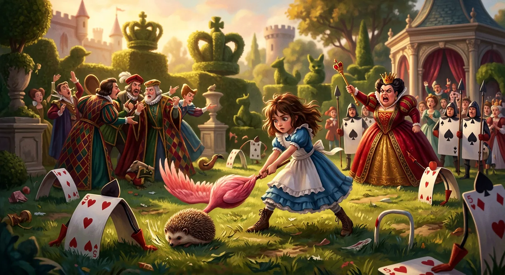
Painted Roses and Royal Fury
Alice discovered, upon approaching the garden's entrance, a most peculiar sight indeed—three gardeners busily painting white roses red upon a large rose-tree, and quarrelling amongst themselves in the manner of workmen everywhere, which is to say, with considerable blame-shifting and rather little actual work accomplished. These gardeners, you see, were playing cards—Two, Five, and Seven of spades, to be precise—and they explained to Alice in hushed, anxious tones that they had planted the wrong rose-tree altogether, and should the Queen discover their error, why, they should all have their heads cut off, which did seem a rather severe horticultural policy.
Before Alice could properly consider this revelation, a great cry of "The Queen! The Queen!" sent the gardeners flat upon their faces, and there came marching the most extraordinary procession Alice had ever witnessed. First the soldiers (clubs, oblong and flat), then the courtiers (diamonds, walking two by two), then ten royal children (hearts, jumping merrily hand in hand—the little dears), then various guest Kings and Queens, among them the White Rabbit looking hurried and nervous as ever, then the Knave of Hearts bearing the crown, and finally, last of all this grand parade, THE KING AND QUEEN OF HEARTS themselves.
Alice rather sensibly decided against lying face-down—for what, she reasoned, would be the use of a procession if nobody could see it?—and this independent thinking brought her immediately to the Queen's furious attention. The Queen demanded her name, threatened her head, and was only silenced when Alice declared "Nonsense!" with such conviction that even this most volatile of monarchs found herself momentarily speechless. The gardeners fared less well; the Queen ordered their execution without a second thought, though Alice cleverly hid them in a flower-pot, and when the soldiers reported that "their heads are gone," well, that satisfied everyone nicely.
Alice found herself swept into a game of croquet that defied every reasonable expectation of the sport. The balls were live hedgehogs (prone to unrolling and crawling away), the mallets were live flamingoes (given to twisting about and staring up at one with puzzled expressions), and the arches were doubled-up soldiers (who kept wandering off to other parts of the ground). The players quarrelled dreadfully, played all at once without waiting for turns, fought over hedgehogs, and attended to no rules whatsoever—while the Queen stamped about screaming "Off with his head!" roughly once per minute.
It was into this chaos that the Cheshire Cat's grin materialised, followed gradually by eyes, ears, and finally its whole head—but nothing more. Alice poured out her complaints about the impossible game, narrowly avoided insulting the Queen to her face, and introduced the Cat to the King, who took an immediate dislike to its expression and demanded its removal. The Queen, naturally, ordered its beheading, but this presented a philosophical difficulty that soon had the executioner, the King, and the Queen all arguing at once: could one behead a creature that possessed only a head and no body to cut it from?
Alice suggested they consult the Duchess, to whom the Cat belonged, and though the Queen sent for her at once, the Cat's head had faded entirely away by the time she arrived—leaving the King and executioner to search wildly for what was no longer there, whilst the remaining company drifted back toward that bewildering game.
And it was in precisely this state of magnificent confusion that the Duchess herself appeared, ready to offer Alice some rather pointed observations about morals, meanings, and the curious nature of Wonderland's justice.
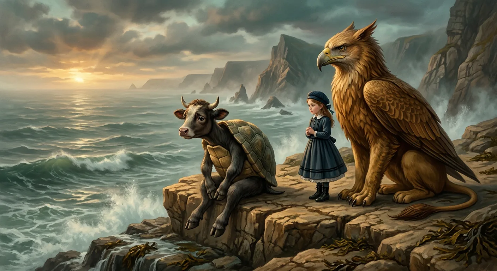
Morals, Mustard, and the Mock Turtle
Alice found herself rather astonished—pleasantly so, for once—to encounter the Duchess in such remarkably agreeable spirits, the two of them walking arm in arm as though they were the dearest of old friends. Alice supposed, upon reflection, that perhaps it had been only the pepper in the kitchen that had made the Duchess so very savage before; and this thought led her, as thoughts so often do when one is walking and half-attending, into a most satisfying little reverie about condiments and temperaments. Pepper made people hot-tempered, she reasoned, and vinegar made them sour, and camomile bitter—and barley-sugar, naturally, must make children sweet. She was *quite* pleased with this new rule, though she had rather forgotten to share it with anyone.
The Duchess, however, was not the sort of companion to let silence stand unmortalized. She pressed herself uncomfortably close—for she was *very* ugly, and possessed of an uncommonly sharp chin that she seemed determined to rest upon Alice's shoulder—and proceeded to extract morals from every conceivable subject: love making the world go round, birds of a feather flocking together, mustard and flamingos and the mystifying relationship between mines and minerals. Alice attempted, with admirable patience, to point out that mustard was neither bird nor mineral but vegetable, though the Duchess only agreed more vigorously and offered increasingly incomprehensible maxims in return—one of which grew so tangled that Alice confessed she might understand it better written down, though she rather suspected she would not.
But all moralizing ceased the instant the Queen appeared, frowning like a thunderstorm. The Duchess's voice died mid-syllable, her arm trembled, and within moments she had vanished entirely—having been given fair warning that either she or her head must be off, and wisely choosing the former.
The croquet game resumed with its usual chaos, the Queen shouting executions at every turn until the soldiers who served as arches had all been pressed into custody duty, and scarcely anyone remained at liberty except the King, the Queen, and Alice herself. Then the Queen, quite out of breath, inquired whether Alice had yet seen the Mock Turtle—which Alice had not, having never even heard of such a creature. "It's the thing Mock Turtle Soup is made from," the Queen explained, with perfect Wonderland logic, and led her off to meet him.
They came upon a Gryphon basking in the sun, whom the Queen commanded to escort Alice while she attended to her executions. The Gryphon, once the Queen departed, chuckled and confided that nobody ever *really* got executed—it was all fancy, you know. They found the Mock Turtle sitting mournfully on a ledge, sighing as if his heart would break, though the Gryphon assured Alice this sorrow, too, was merely his fancy.
The Mock Turtle's history proved a melancholy and meandering affair. Once, he sighed, he had been a *real* Turtle. There followed an elaborate account of his undersea education—Reeling and Writhing, Ambition and Distraction, Mystery and Seaography, Drawling and Fainting in Coils—each subject a delightfully twisted echo of Alice's own schooling. The lessons, the Gryphon explained, were called so because they *lessened* from day to day, ten hours dwindling to nine and onward until the eleventh day brought holiday. When Alice inquired about the twelfth, however, the Gryphon cut her off decisively; it was quite enough about lessons, and high time to hear about the games.
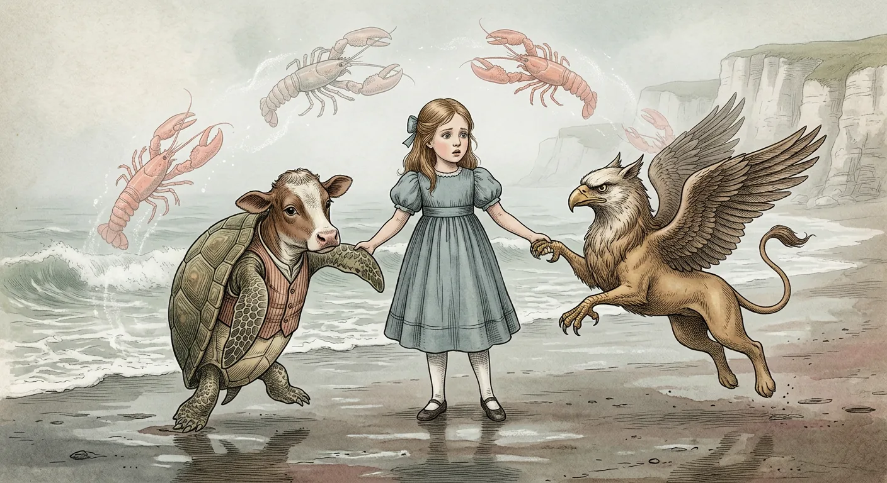
Dancing with Lobsters by the Sea
The Mock Turtle, having exhausted himself with the sorrows of his educational history, now drew a great sighing breath and wiped at his eyes with the back of one flapper—for all the world, as the Gryphon observed with characteristic delicacy, as if he had a bone stuck in his throat. There followed a good deal of shaking and thumping administered by the Gryphon, until at last the poor creature recovered sufficient voice to inquire whether Alice had ever been properly introduced to a lobster.
Alice, it must be noted, very nearly admitted that she had once *tasted* one, but caught herself just in time and substituted "No, never"—a diplomatic revision that would have done credit to any young lady navigating the treacherous waters of Wonderland conversation. This tactful denial secured her an explanation of that most delightful of undersea entertainments: the Lobster Quadrille.
What followed was a most energetic and thoroughly confusing description, delivered in breathless alternation between the two creatures, who interrupted each other at every turn and grew increasingly wild in their demonstrations. There were two lines of dancers—seals, turtles, salmon, and so forth—and lobsters for partners, and a great deal of advancing and retiring and throwing said lobsters out to sea and swimming after them and turning somersaults, all punctuated by the Gryphon's enthusiastic shouts and bounds into the air. The description concluded as suddenly as it had begun, with both creatures sitting down very sadly and quietly, as though exhausted by the mere memory of such vigorous proceedings.
They obliged Alice with an actual performance, dancing solemnly round and round her (treading rather frequently upon her toes), while the Mock Turtle sang a mournful ballad concerning a whiting's attempts to persuade a reluctant snail to join the dance. The verses tumbled along in irresistible repetition—*will you, won't you, will you, won't you*—and concluded with the philosophical observation that the further one travels from England, the nearer one approaches France, which seemed to Alice a curious sort of encouragement for aquatic calisthenics.
The song finished, conversation turned to the nature of whitings, and here the wordplay grew thick as seaweed. Alice very nearly mentioned having seen them at *dinner*, the Mock Turtle puzzled over where "Dinn" might be located, and the Gryphon solemnly explained that whitings were so called because they *did the boots and shoes*—under the sea, you understand, where blacking would never answer. Shoes, naturally, were made of soles and eels, and no sensible fish would travel anywhere without a porpoise, which Alice might have called a *purpose* had she been speaking properly.
Commanded to share her own adventures, Alice recounted them from that very morning—for yesterday she had been quite a different person—and found herself pressed to recite verses, which emerged hopelessly transformed by the Lobster Quadrille still echoing in her head. The voice of the sluggard became the voice of the Lobster, complaining of being baked too brown and sugaring his hair, and though the Mock Turtle declared it uncommon nonsense, Alice could offer no better explanation than that turning out one's toes was the first position in dancing.
At last, mercifully, she was permitted to stop, and the Mock Turtle, deeply sighing, began a tremulous rendition of "Beautiful Soup"—that melancholy tribute to the tureen—his voice sometimes choked with sobs at the beauty of the sentiment. But scarcely had he begun the chorus a second time when a distant cry interrupted everything: *"The trial's beginning!"*
The Gryphon seized Alice by the hand and hurried her away at once, leaving the song unfinished, while behind them, carried faintly on the breeze, came the last lingering notes of that beautiful, beautiful Soup—and ahead, whatever mysterious trial now awaited them.
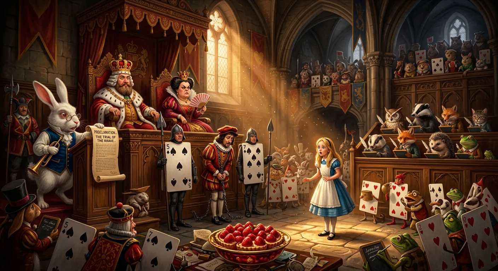
A Courtroom of Nonsense and Tarts
The King and Queen of Hearts sat upon their throne in considerable state, presiding over as curious an assembly as ever gathered for a trial—little birds and beasts of every description mingled with the whole pack of cards, all pressed together in what Alice supposed must be a court of justice. The Knave of Hearts stood before them in chains, a soldier stationed on either side, looking altogether wretched; and near the King stood the White Rabbit, clutching a trumpet in one hand and a scroll of parchment in the other, looking tremendously official. In the very middle of the court sat a table bearing a large dish of tarts, and they looked *so* good that Alice found herself quite distracted by hunger—"I wish they'd get the trial done and hand round the refreshments!" she thought, though there seemed precious little chance of that.
Still, Alice was rather pleased with herself, for she had never been in a court of justice before and yet recognized nearly everything from her reading. That was the judge (the King, wearing his crown perched awkwardly atop his wig), and *that* was the jury-box, filled with twelve creatures—she was obliged to say "creatures," you see, because some were animals and some were birds—all scribbling furiously on slates before a single word of testimony had been given. They were writing down their names, the Gryphon explained, for fear they should forget them before the trial's end. "Stupid things!" Alice began indignantly, and was mortified to observe every juror dutifully recording her words, one of them even asking his neighbour how to spell "stupid."
The absurdity mounted swiftly. One juror's pencil squeaked so dreadfully that Alice crept round and confiscated it—poor Bill the Lizard spent the remainder of the day writing with his finger, which left no mark at all. The White Rabbit read the accusation in verse (the Queen of Hearts had made some tarts; the Knave had stolen them quite away), and the King immediately demanded a verdict, only to be corrected by the Rabbit that there was a great deal to come before *that*.
The Hatter appeared as first witness, still clutching his tea things, having begun his tea on the fourteenth of March—or the fifteenth, said the March Hare—or the sixteenth, added the Dormouse—and the jury eagerly recorded all three dates and reduced them to shillings and pence. The King accused him of stealing his hat; the Queen fixed him with such a stare that he bit a piece out of his teacup; and his testimony dissolved into incoherent rambling about twinkling tea and thin bread-and-butter. Throughout it all, Alice felt a curious sensation: she was growing again, much to the Dormouse's irritation, who declared she had no right to grow *there*, at least not in such a ridiculous fashion.
The cook came next, armed with her pepper-box, and refused to give evidence at all. The Dormouse interjected "Treacle" and was ordered beheaded, suppressed, and turned out; by the time order was restored, the cook had vanished entirely. The King rubbed his aching forehead and called for the next witness with evident relief.
Alice watched the White Rabbit fumble through his list, thinking how very little evidence they had gathered thus far—when, to her astonishment, the Rabbit called out in his shrill little voice the name that she least expected to hear: *"Alice!"*
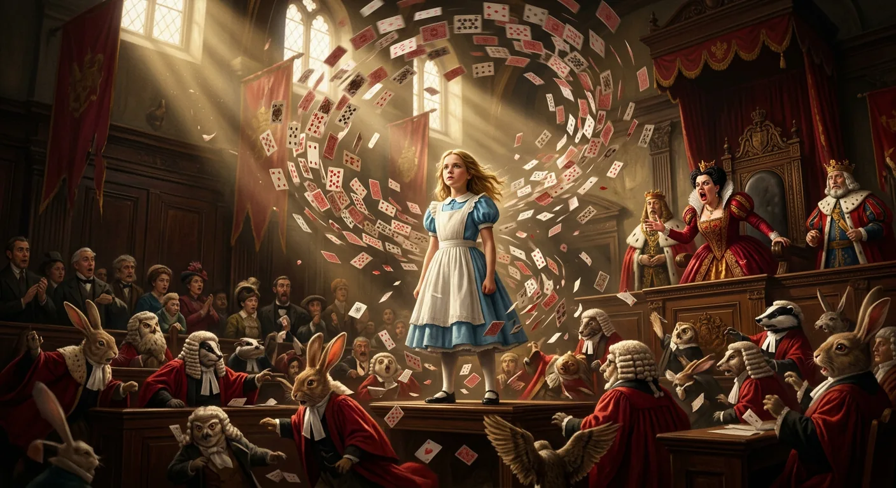
Alice Defies the Court's Absurd Justice
"Here!" cried Alice, quite forgetting—as children so often do in moments of flurry and excitement—that she had grown rather considerably in the last few minutes, and in her haste she jumped up so precipitously that her skirt caught the edge of the jury-box and sent all twelve jurymen tumbling down upon the heads of the crowd below. There they lay sprawling about in the most undignified fashion, reminding her very much of a globe of goldfish she had accidentally upset the week before—and so, naturally, she set about collecting them with great urgency, for she had a vague sort of idea that if they weren't returned to their box at once, they would surely die.
The King, looking quite grave about the whole business, insisted the trial could not proceed until every juryman was properly restored, and Alice discovered she had placed the unfortunate Lizard in head downwards, the poor creature waving its tail about in the most melancholy way. She righted him quickly enough, though she privately thought he would be quite as useful to the proceedings one way up as the other.
What followed was a masterpiece of legal nonsense, for when the King demanded to know what Alice knew of the matter, she replied simply, "Nothing"—and this was solemnly recorded as either very important or very *un*important, depending on which juryman you asked. The King then produced Rule Forty-two, stating that all persons more than a mile high must leave the court—a rule Alice cleverly noted ought to be Number One if it were truly the oldest in the book, which turned the King quite pale indeed.
The White Rabbit then introduced a mysterious paper—verses written in nobody's handwriting, signed by nobody, addressed to nobody—which the King declared proved everything and the Queen declared proved guilt. Alice, having grown so large she wasn't a bit afraid of anyone now, offered sixpence to any creature who could explain the nonsensical rhyme, but none attempted it. The King stretched meanings to fit his verdict, the Queen threw an inkstand at poor Bill the Lizard, and when she demanded "Sentence first—verdict afterwards!" Alice could bear it no longer.
"Stuff and nonsense!" she cried loudly, and when the Queen shrieked "Off with her head!" Alice—now grown to her full size—replied with magnificent defiance: "Who cares for you? You're nothing but a pack of cards!"
At this the whole court rose up in a whirlwind of flying cards, and Alice, giving a little scream half of fright and half of anger, found herself lying on the riverbank with her head in her sister's lap, dead leaves fluttering across her face.
She told her sister everything—all these curious adventures you have just been reading about—and ran off to tea, leaving her sister dreaming in the golden afternoon. And as the elder girl sat watching the setting sun, she too slipped into a sort of waking dream, hearing again the rattle of teacups, the Queen's shrill orders, the Mock Turtle's heavy sobs—though she knew that opening her eyes would change all Wonderland to mere rustling grass and tinkling sheep-bells and the ordinary clamour of a farm-yard.
She pictured little Alice grown into a woman, keeping always her simple, loving heart, gathering children of her own about her knees and making their eyes bright with strange tales—perhaps even with the dream of Wonderland, remembered across all those happy summer days.
*And so the golden afternoon draws to its close, but dreams—as anyone who has tumbled down rabbit-holes well knows—have a curious way of lingering.*
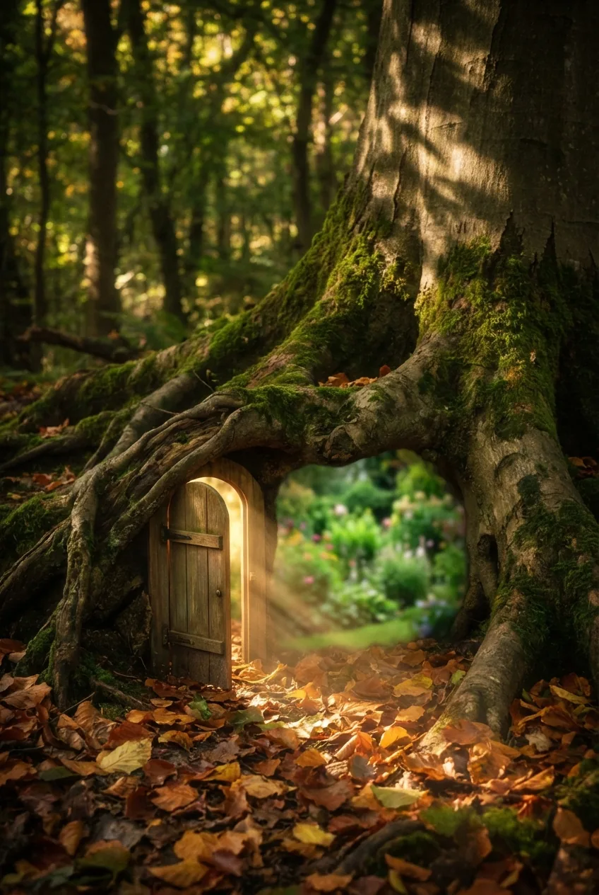